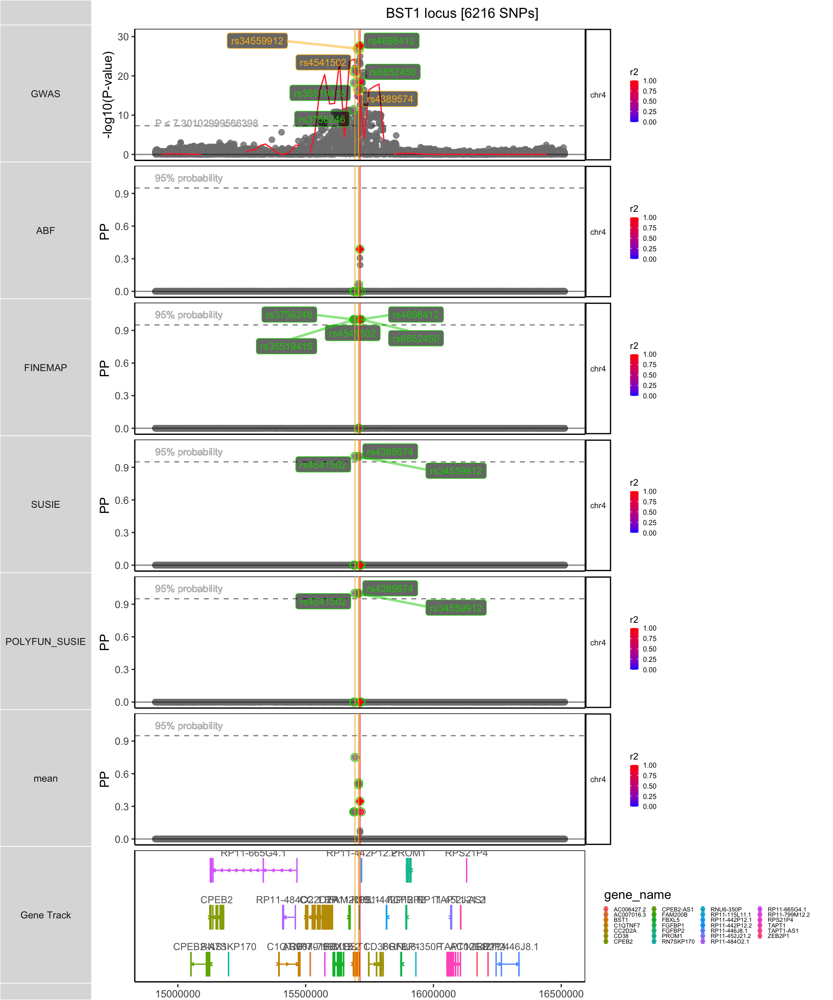
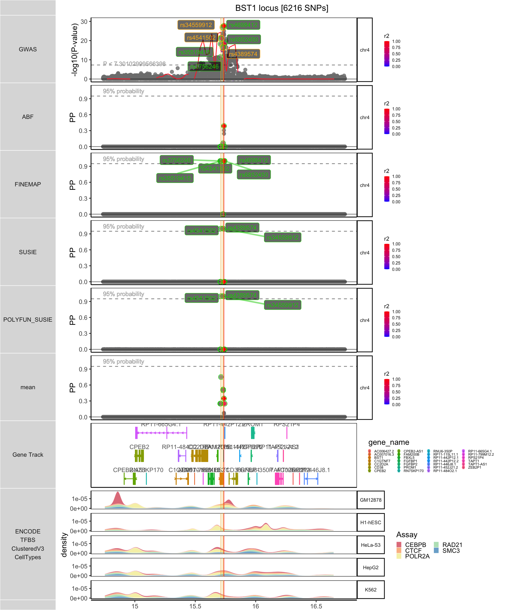
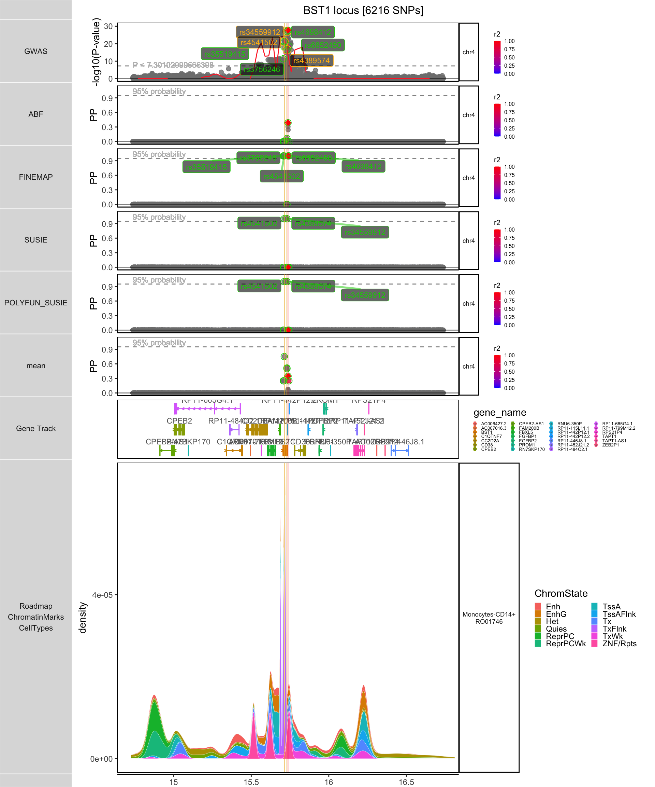
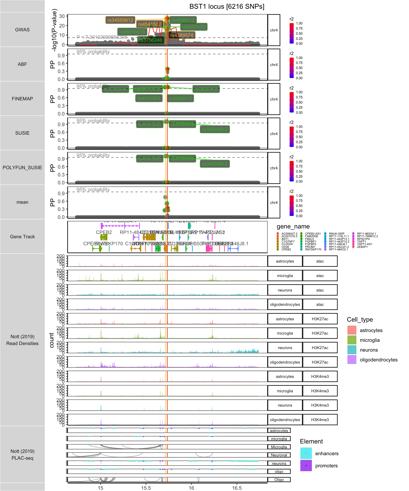
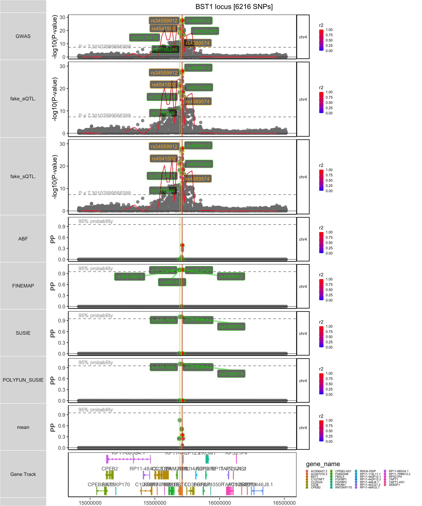

vignettes/plotting_vignette.Rmd
plotting_vignette.Rmdlibrary(echolocatoR) #> Registered S3 method overwritten by 'GGally': #> method from #> +.gg ggplot2
echolocatoR contains various functions that can be used separately
from the comprehensive finemap_loci() pipeline.
Generate a multiview plot using GGBIO.plot().
?GGBIO.plot for details).plot.window size (in units of basepairs).GGBIO.plot() returns a ggbio track object.
ggplot2 functions like + theme().save_plot=T
dpi argument (default=300).height and width of the saved plot using these respective arguments.Load example dataset of the results from fine-mapping the BST1 locus with finemap_loci(). Original data comes from the recent Nalls et al. (2019) Parkinson’s disease GWAS (see ?BST1 for details).
trk_plot <- GGBIO.plot(finemap_dat=finemap_DT, LD_matrix=LD_matrix, locus_dir=locus_dir, XGR_libnames=NULL, save_plot=F, show_plot=show_plot) #> [1] "+ Filling NAs in CS cols with 0" #> [1] "+ Filling NAs in PP cols with 0" #> [1] "GGBIO:: LD_matrix detected. Coloring SNPs by LD with lead SNP." #> [1] "LD Matrix dimensions: 95 x 95" #> [1] "Extracting LD subset for lead SNP: rs4698412" #> [1] "++ GGBIO:: GWAS track" #> using coord:genome to parse x scale #> [1] "++ GGBIO:: ABF track" #> using coord:genome to parse x scale #> [1] "++ GGBIO:: FINEMAP track" #> using coord:genome to parse x scale #> [1] "++ GGBIO:: SUSIE track" #> using coord:genome to parse x scale #> [1] "++ GGBIO:: POLYFUN_SUSIE track" #> using coord:genome to parse x scale #> [1] "++ GGBIO:: mean track" #> using coord:genome to parse x scale #> [1] "++ GGBIO:: Gene Model Track" #> [1] "+ Annotating at transcript-level." #> Fetching data... #> OK #> Parsing exons...OK #> Defining introns...OK #> Defining UTRs...OK #> Defining CDS...OK #> aggregating... #> Done #> Fetching data...OK #> Parsing exons...OK #> Defining introns...OK #> Defining UTRs...OK #> Defining CDS...OK #> aggregating... #> Done #> Constructing graphics... #> Warning: Removed 6131 rows containing non-finite values (stat_smooth). #> Warning: Removed 1 row(s) containing missing values (geom_path). #> Warning: Duplicated override.aes is ignored.

trk_plot <- trk_plot + theme(strip.background = element_rect(fill="gray"), text = element_text(size=3, color="blue"))
Whenever you use annotation arguments (e.g. XGR_libnames,Roadmap,Nott_epigenome) the annotations that overlap with your locus will automatically be saved as GRanges objects
in a locus-specific subdirectory:
results/
trk_plot.xgr <- GGBIO.plot(finemap_dat=finemap_DT, LD_matrix=LD_matrix, locus_dir=locus_dir, XGR_libnames=c("ENCODE_TFBS_ClusteredV3_CellTypes"), save_plot=F, show_plot=show_plot) #> [1] "+ Filling NAs in CS cols with 0" #> [1] "+ Filling NAs in PP cols with 0" #> [1] "GGBIO:: LD_matrix detected. Coloring SNPs by LD with lead SNP." #> [1] "LD Matrix dimensions: 95 x 95" #> [1] "Extracting LD subset for lead SNP: rs4698412" #> [1] "++ GGBIO:: GWAS track" #> using coord:genome to parse x scale #> [1] "++ GGBIO:: ABF track" #> using coord:genome to parse x scale #> [1] "++ GGBIO:: FINEMAP track" #> using coord:genome to parse x scale #> [1] "++ GGBIO:: SUSIE track" #> using coord:genome to parse x scale #> [1] "++ GGBIO:: POLYFUN_SUSIE track" #> using coord:genome to parse x scale #> [1] "++ GGBIO:: mean track" #> using coord:genome to parse x scale #> [1] "++ GGBIO:: Gene Model Track" #> [1] "+ Annotating at transcript-level." #> [1] "++ GGBIO:: XGR Tracks" #> Start at 2020-07-09 18:29:56 #> #> 'ENCODE_TFBS_ClusteredV3_CellTypes' (from http://galahad.well.ox.ac.uk/bigdata/ENCODE_TFBS_ClusteredV3_CellTypes.RData) has been loaded into the working environment (at 2020-07-09 18:30:15) #> #> End at 2020-07-09 18:30:15 #> Runtime in total is: 19 secs #> [1] "+ dat2 already in GRanges format" #> Warning in .replace_seqlevels_style(x_seqlevels, value): found more than one #> best sequence renaming map compatible with seqname style "NCBI" for this object, #> using the first one #> 8702 query SNP(s) detected with reference overlap. #> Warning in max(xlim): no non-missing arguments to max; returning -Inf #> Scale for 'x' is already present. Adding another scale for 'x', which will #> replace the existing scale. #> Warning: Removed 6131 rows containing non-finite values (stat_smooth). #> Warning: Removed 1 row(s) containing missing values (geom_path). #> Warning: Duplicated override.aes is ignored.

trk_plot.roadmap <- GGBIO.plot(finemap_dat=finemap_DT, LD_matrix=LD_matrix, locus_dir=locus_dir, XGR_libnames=NULL, Roadmap=T, Roadmap_query="monocyte", save_plot=F, show_plot=show_plot) #> [1] "+ Filling NAs in CS cols with 0" #> [1] "+ Filling NAs in PP cols with 0" #> [1] "GGBIO:: LD_matrix detected. Coloring SNPs by LD with lead SNP." #> [1] "LD Matrix dimensions: 95 x 95" #> [1] "Extracting LD subset for lead SNP: rs4698412" #> [1] "++ GGBIO:: GWAS track" #> using coord:genome to parse x scale #> [1] "++ GGBIO:: ABF track" #> using coord:genome to parse x scale #> [1] "++ GGBIO:: FINEMAP track" #> using coord:genome to parse x scale #> [1] "++ GGBIO:: SUSIE track" #> using coord:genome to parse x scale #> [1] "++ GGBIO:: POLYFUN_SUSIE track" #> using coord:genome to parse x scale #> [1] "++ GGBIO:: mean track" #> using coord:genome to parse x scale #> [1] "++ GGBIO:: Gene Model Track" #> [1] "+ Annotating at transcript-level." #> [1] "+ GGBIO:: Creating Roadmap track" #> [1] "+ Saved annotation file detected. Loading..." #> Warning in max(xlim): no non-missing arguments to max; returning -Inf #> Warning: Removed 6131 rows containing non-finite values (stat_smooth). #> Warning: Removed 1 row(s) containing missing values (geom_path). #> Warning: Duplicated override.aes is ignored. #> Warning: Groups with fewer than two data points have been dropped. #> Warning: Groups with fewer than two data points have been dropped. #> Warning: Removed 2 rows containing missing values (position_stack). #> Warning: Groups with fewer than two data points have been dropped. #> Warning: Groups with fewer than two data points have been dropped. #> Warning: Removed 2 rows containing missing values (position_stack).

?NOTT_2019.bigwig_metadata for details).trk_plot.nott_2019 <- GGBIO.plot(finemap_dat=finemap_DT, LD_matrix=LD_matrix, locus_dir=locus_dir, XGR_libnames=NULL, Nott_epigenome=T, Nott_binwidth = 100, Nott_regulatory_rects = T, Nott_show_placseq = T, save_plot=F, show_plot=show_plot) #> [1] "+ Filling NAs in CS cols with 0" #> [1] "+ Filling NAs in PP cols with 0" #> [1] "GGBIO:: LD_matrix detected. Coloring SNPs by LD with lead SNP." #> [1] "LD Matrix dimensions: 95 x 95" #> [1] "Extracting LD subset for lead SNP: rs4698412" #> [1] "++ GGBIO:: GWAS track" #> using coord:genome to parse x scale #> [1] "++ GGBIO:: ABF track" #> using coord:genome to parse x scale #> [1] "++ GGBIO:: FINEMAP track" #> using coord:genome to parse x scale #> [1] "++ GGBIO:: SUSIE track" #> using coord:genome to parse x scale #> [1] "++ GGBIO:: POLYFUN_SUSIE track" #> using coord:genome to parse x scale #> [1] "++ GGBIO:: mean track" #> using coord:genome to parse x scale #> [1] "++ GGBIO:: Gene Model Track" #> [1] "+ Annotating at transcript-level." #> Warning in max(xlim): no non-missing arguments to max; returning -Inf #> [1] "Importing Astrocyte enhancers ..." #> [1] "Importing Astrocyte promoters ..." #> [1] "Importing Neuronal enhancers ..." #> [1] "Importing Neuronal promoters ..." #> [1] "Importing Oligo enhancers ..." #> [1] "Importing Oligo promoters ..." #> [1] "Importing Microglia enhancers ..." #> [1] "Importing Microglia promoters ..." #> [1] "+ Converting to GRanges." #> Scale for 'y' is already present. Adding another scale for 'y', which will #> replace the existing scale. #> Scale for 'y' is already present. Adding another scale for 'y', which will #> replace the existing scale. #> [1] "++ Nott sn-epigenomics:: Returning PLAC-seq track." #> Warning: Removed 6131 rows containing non-finite values (stat_smooth). #> Warning: Removed 1 row(s) containing missing values (geom_path). #> Warning: Duplicated override.aes is ignored.

# Make fake QTL P-values for the sake a demonstration finemap_DT$fake_eQTL.P <- finemap_DT$P * c(1,.9,.7) finemap_DT$fake_sQTL.P <- finemap_DT$P * c(1,.8,.5) trk_plot.qtl <- GGBIO.plot(finemap_dat=finemap_DT, LD_matrix=LD_matrix, locus_dir=locus_dir, QTL_prefixes=c("fake_eQTL.","fake_sQTL."), XGR_libnames=NULL, save_plot=F, show_plot=show_plot) #> [1] "+ Filling NAs in CS cols with 0" #> [1] "+ Filling NAs in PP cols with 0" #> [1] "GGBIO:: LD_matrix detected. Coloring SNPs by LD with lead SNP." #> [1] "LD Matrix dimensions: 95 x 95" #> [1] "Extracting LD subset for lead SNP: rs4698412" #> [1] "++ GGBIO:: GWAS track" #> using coord:genome to parse x scale #> [1] "++ GGBIO:: fake_eQTL. track" #> using coord:genome to parse x scale #> [1] "++ GGBIO:: fake_sQTL. track" #> using coord:genome to parse x scale #> [1] "++ GGBIO:: ABF track" #> using coord:genome to parse x scale #> [1] "++ GGBIO:: FINEMAP track" #> using coord:genome to parse x scale #> [1] "++ GGBIO:: SUSIE track" #> using coord:genome to parse x scale #> [1] "++ GGBIO:: POLYFUN_SUSIE track" #> using coord:genome to parse x scale #> [1] "++ GGBIO:: mean track" #> using coord:genome to parse x scale #> [1] "++ GGBIO:: Gene Model Track" #> [1] "+ Annotating at transcript-level." #> Fetching data... #> OK #> Parsing exons...OK #> Defining introns...OK #> Defining UTRs...OK #> Defining CDS...OK #> aggregating... #> Done #> Fetching data...OK #> Parsing exons...OK #> Defining introns...OK #> Defining UTRs...OK #> Defining CDS...OK #> aggregating... #> Done #> Constructing graphics... #> Warning: Removed 6131 rows containing non-finite values (stat_smooth). #> Warning: Removed 1 row(s) containing missing values (geom_path). #> Warning: Removed 6131 rows containing non-finite values (stat_smooth). #> Warning: Removed 1 row(s) containing missing values (geom_path). #> Warning: Removed 6131 rows containing non-finite values (stat_smooth). #> Warning: Removed 1 row(s) containing missing values (geom_path). #> Warning: Duplicated override.aes is ignored.
